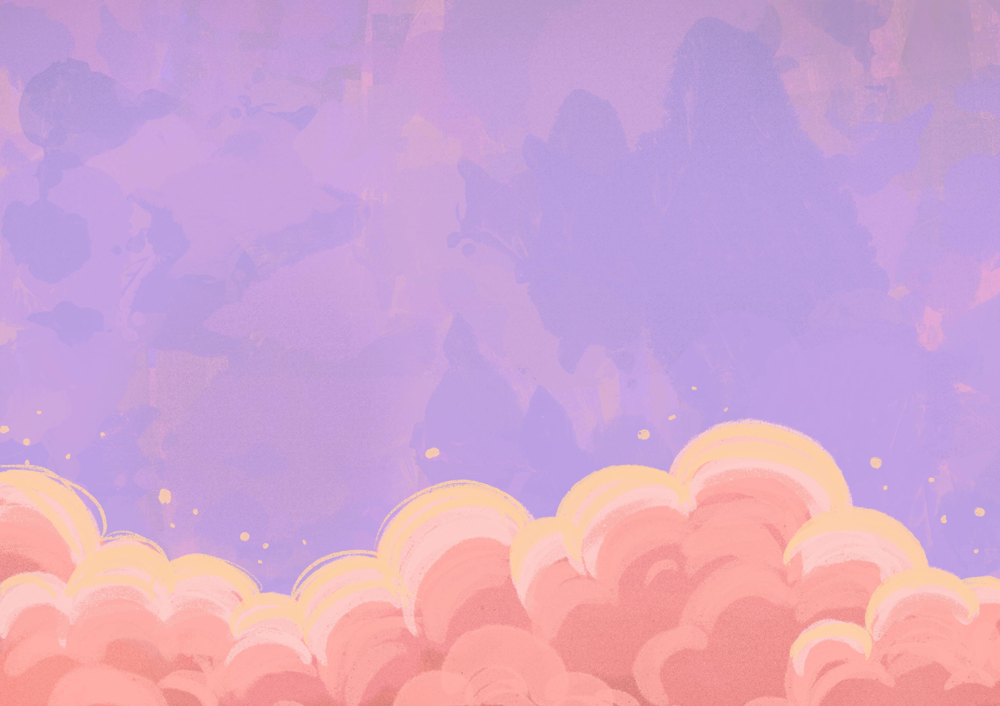
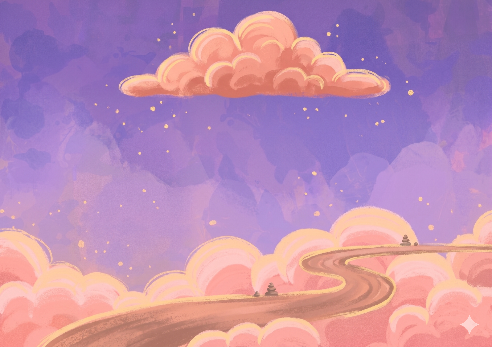

Soft sky
The colors stay dreamy and calm, so the story keeps flowing instead of feeling cut apart.

"Some beautiful journeys never end..."
Since we met
After you're mine
Created by
Rheza Agung

Second slide
Every story needs a softer place to land. This chapter becomes the first pause in the journey, like the moment we look back and realize something gentle has already started to bloom.
The colors stay dreamy and calm, so the story keeps flowing instead of feeling cut apart.
Little details can live here later: a memory, a date, or one line that still makes you smile.
This is the doorway into the rest of the story, with room for more chapters underneath.
Third slide
This slide is made to auto-scroll from right to left. You can replace these with your own photos later, but the motion and glass-frame layout are already ready for the storytelling flow.

The kind of sky that already feels like the beginning of something.
A portrait card for a favorite person, favorite smile, favorite chapter.

Every soft turn feels like it was leading somewhere warm.
A place for screenshots, notes, or tiny reminders you want to keep.
The story keeps growing even in quiet moments.
A soft closing frame before the journey moves into the next chapter.
Fourth slide
This chapter is now designed for your playlist. It works like a soundtrack slide in the middle of the journey, where people can pause, play, and feel the mood of the story.
Use this side to explain why this playlist matters, or what kind of memories live inside it.
Add one lyric, one memory, or one little note that makes the music feel personal.
Now playing our chapter
A playlist section fits here like a pause in the story before the next memory begins.
Fifth slide
A timeline slide gives the journey rhythm. You can swap these placeholders with your own dates, chapters, and turning points.
Chapter 01
Use this for a first conversation, a first meeting, or the first moment you truly noticed.
Chapter 02
Place the memory that made your bond feel more certain and more alive.
Chapter 03
Perfect for a confession, a commitment, or the start of “us” in a more defined way.
Chapter 04
Use this for one memory you always come back to when you want to feel everything again.
Chapter 05
Add the chapter where comfort, trust, or understanding started feeling effortless.
Chapter 06
This can hold a hard moment you survived together or a promise that made you stronger.
Chapter 07
Use the last milestone as a bridge into everything you still want to build together.
Sixth slide
This section is for the future-facing part of the story. It can hold hopes, vows, dreams, or the quiet promises you want to keep returning to.
Keep this corner for the kind of love that feels safe, warm, and patient.
A reminder that the best stories are built in small everyday ways.
Use this card for plans, places, and beautiful futures you want to grow into.
Leave space for the feelings that still make the story feel bright.
Seventh slide
This last slide keeps the same glass-box feeling as the second one, so it works as a soft ending. You can turn it into a final love note, a thank-you page, or the closing scene of the whole story.
Use one short paragraph here for the heart of everything you wanted to say.
Add your final hope, promise, or invitation into the next chapter you want to write together.
End with a sentence that feels like a hand held out gently at the end of the page.
Eighth slide
Pick all the beautiful reasons that make her worth loving. The good ones stay glowing. The wrong ones fade away with a little “nope,” just like the idea in your reference.
Choose every green-flag quality. Wrong choices fade away for a moment and won’t count.
Find at least 9 good qualities to unlock the next chapter and continue to the letter.
Why should I date you?
Choose at least 9
0 / 9
You got it. Every right choice looks beautiful on you.
Ninth slide
Letter for you
Thank you for being the kind of person who can make ordinary days feel softer, brighter, and more worth remembering. Somewhere along the way, your presence became one of my favorite places to return to.
This little journey was made to hold moments, songs, memories, and tiny chapters that all point back to you. Some are playful, some are quiet, and some are hard to explain, but all of them come from a real place in my heart.
No matter how many slides come before this one, the ending keeps landing in the same feeling: I admire you, I appreciate you, and I still want to keep writing beautiful things with you from here.
With all the softest parts of me,
Rheza